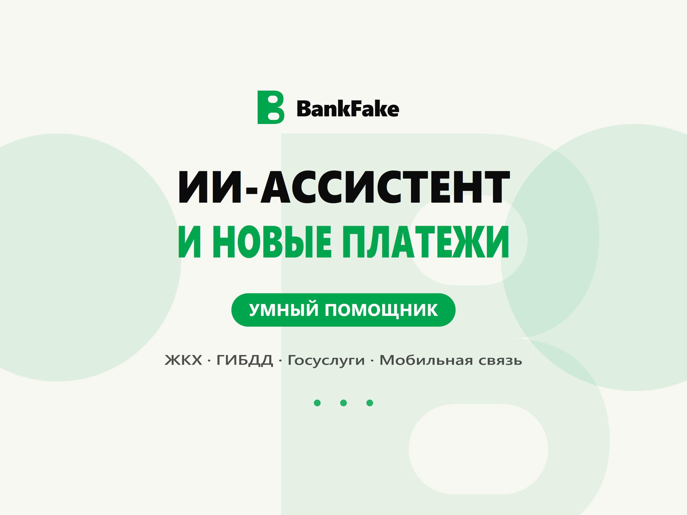

ИИ-ассистент, который знает твои цифры
Спрашивай обычным текстом: «сколько у меня денег», «что было за неделю», «когда зарплата». Нейросеть отвечает по данным твоего профиля — баланс, карты, история операций, баллы и лимиты. Ассистент только читает: платежи и переводы ты подтверждаешь сам.
